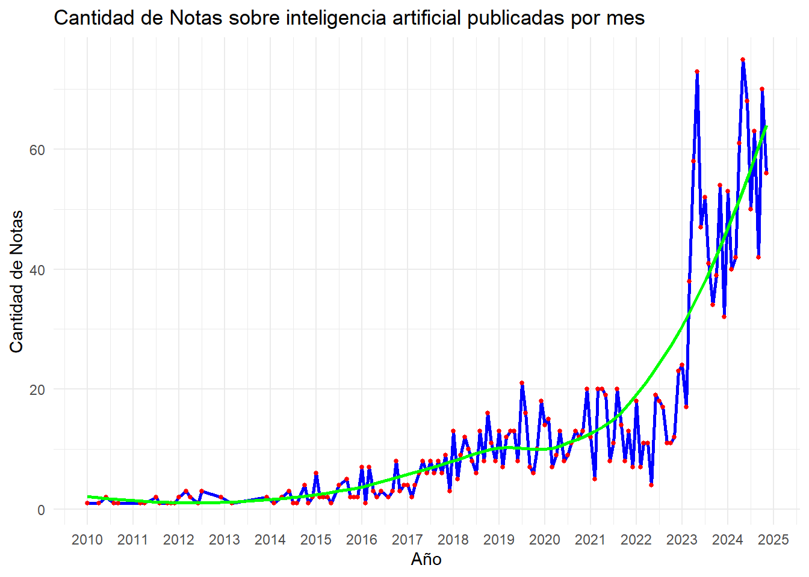
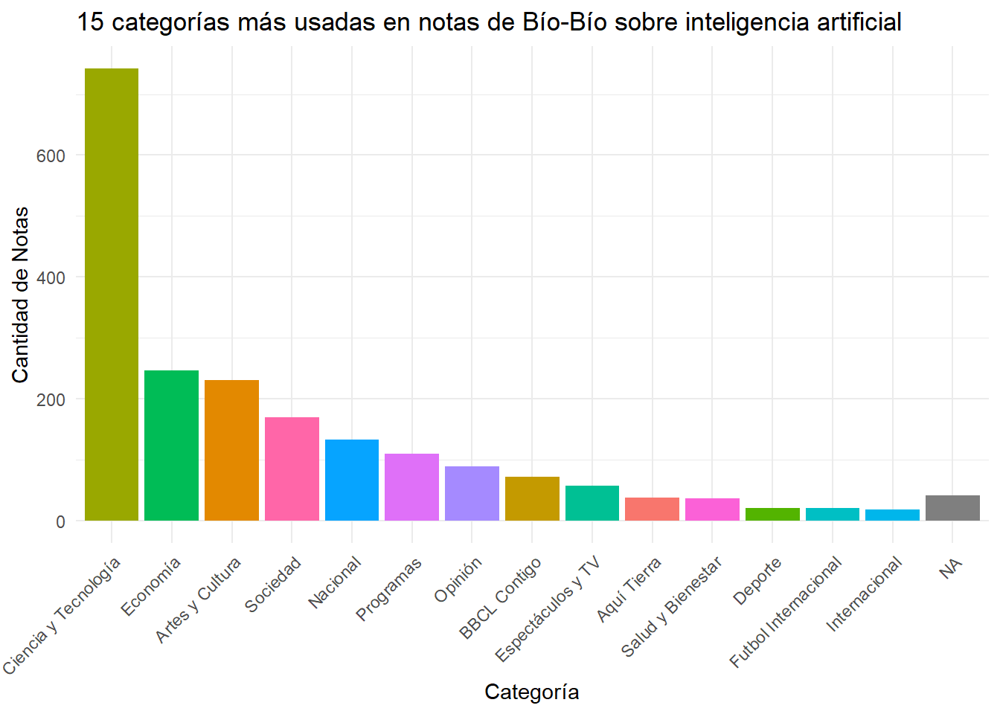
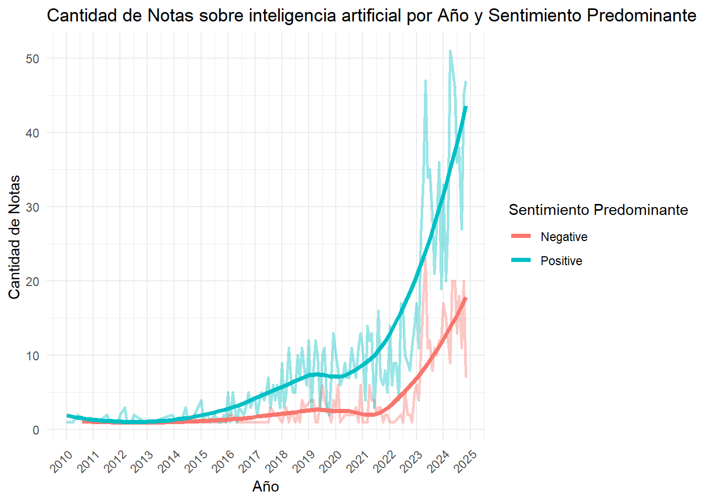
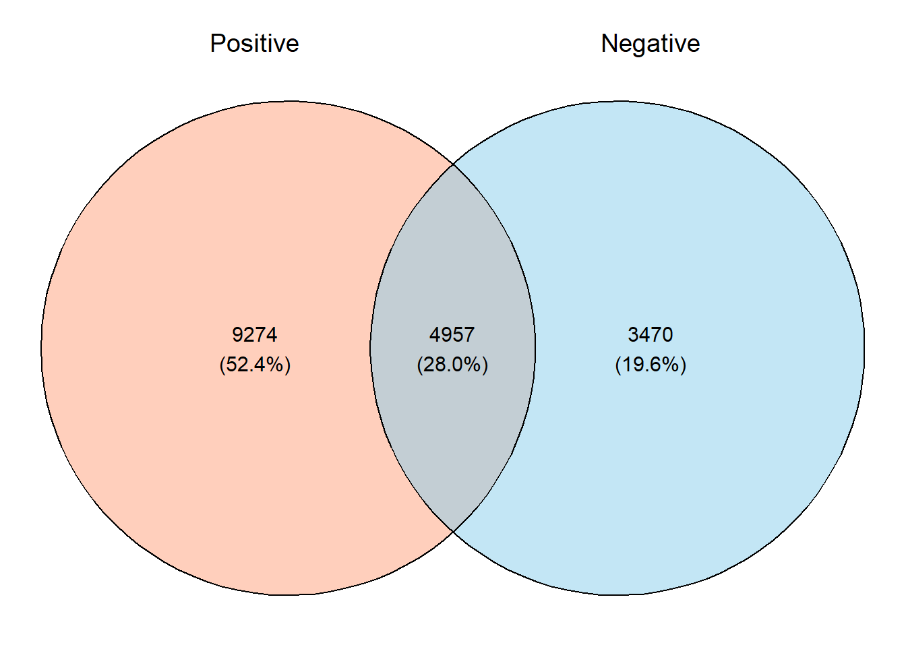

#Cargamos libreria
library(pacman)
p_load(
tidyverse,
httr,
jsonlite,
tidytext,
ggplot2,
ggvenn,
rvest,
stringr,
xml2,
wordcloud2,
arrow,
stopwords,
lubridate,
htmlwidgets
)
rm(list = ls()) Trabajo 2: Web Scraping e IA
Segundo trabajo Métodos Computacionales
Integrantes: Ismael Aguayo y Exequiel Trujillo
Relevancia de los datos
El uso de técnicas de extracción de datos por medio de APIs permite obtener grandes volúmenes de información de fuentes digitales, lo cual es particularmente valioso para las ciencias sociales, que tradicionalmente se han basado en encuestas y censos que pueden ser más costosos y limitados en tiempo y alcance.
Las técnicas de web scraping permiten explorar temas actuales y en constante cambio (mientras se publican contenidos nuevos a diario). Quienes hacen investigación en ciencias sociales necesitan adaptarse a entornos digitales dinámicos. A través de este proyecto se utilizan herramientas computacionales en la recolección y análisis de datos, con una pretensión exploratoria por una parte y también con el objetivo de desarrollar herramientas específicas para el análisis de discurso en la prensa sobre algún tema determinado. En este caso, el tema que se usa de ejemplo es el de la Inteligencia Artificial.
La relevancia sociológica de los datos que se utilizarán se sostiene, en principio, en el elemento revolucionario y transformador que presenta una tecnología como la IA. Segundo, la utilización de medios masivos de comunicación como BíoBíocl y Emol, ambos los medios online más visitados en el país. Esto vinculado con el gran volumen de datos que se está utilizando, otorga validez y significancia a los análisis sociales que se realizan.
La IA ha permeado el trabajo académico en diversos ámbitos, siendo de los más visitados entre estos desde la sociología, la educación y el trabajo. Sin embargo, se percibe una vacío académico en análisis constructivistas que perciban la tecnología no solo como un objeto técnico, sino uno imbricado socialmente con significados, prácticas, y con un gran impacto en la cultura; uno construido en un proceso simultáneamente técnico como social. En los medios, esta construcción es evidente, y tiene un impacto mayor en los significados construidos por los individuos tanto por su masividad como por su posición privilegiada en la sociedad como emisor de información con validez.
Contexto BíoBío y Emol
Para este proyecto, decidimos trabajar con Emol y Bío Bío, dos de los medios de noticias más conocidos en Chile y que tienen un gran impacto en cómo la gente entiende lo que pasa en el país. Nos interesa especialmente porque ambos cubren temas de política, economía, sociedad, tecnología y cultura, en particular sobre Inteligencia Artificial, lo que nos ayuda a explorar cómo se presentan y enmarcan temas importantes o de impacto como este.
Emol es parte del grupo El Mercurio, uno de los conglomerados de medios más grandes de Chile. Este medio tiene una fuerte influencia en la opinión pública y su contenido se enfoca mucho en temas económicos, políticos y empresariales. Creemos que analizar artículos de Emol nos permite ver cómo se representan ciertos sectores de la sociedad y observar el tipo de lenguaje que usan en temas sensibles o de alto interés para la gente. El medio de comunicación El Mercurio On-Line (Emol) es parte de la empresa El Mercurio S.A.P., siendo su portal digital de noticias. Nació a mediados de los 90s con el objetivo de informar a las empresas en economía y actualidad, sin embargo, debido a la competencia de La Tercera online y Terra, se convirtió en lo que es hoy, publicando el contenido de El Mercurio, La segunda y Las Últimas Noticias (Wikipedia, 2024).
Por otro lado, Bío Bío tiene un enfoque más amplio y diverso, pero sigue siendo uno de los medios más consumidos en Chile. El medio BíoBío.cl, del que se extraerán los datos del presente estudio, data de 1959. En principio era una radio, siendo la única con sede fuera de la capital. Para el año 2009 se creó la página web que se utilizará, la cual en 2020 es la página web de noticias más visitada del país, con 122 millones de usuarios únicos y 595 millones de visitas (Quiénes somos | BioBiochile, s. f.).
Ambos medios son los más visitados digitalmente en el país, estando en las posiciones primera (Emol) y segunda (BioBiocl), según el sitio web de rankings SimilarWeb (Septiembre de 2024).
Obtenemos el texto de las noticias con la búsqueda “Inteligencia Artificial” en medio Bío Bío
Se utilizó la API de búsqueda que utiliza la web de BíoBío.cl. Esta no cuenta con documentación, por lo que a prueba y error se fueron descubriendo los parámetros necesarios para automatizar el scrappeo del contenido de la web. Los headers que se utilizaron son los mismos que arroja el get cuando uno realiza una busqueda desde el navegador.
## Parámetros básicos
search_query <- "inteligencia artificial" # Frase a buscar
offset <- 0 # En 0 para que comience por el primer artículo, así funciona la API
# Numero de búsquedas total al ingresar la palabra clave en bíobío.cl (la API busca en múltiplos de a 20)
total_results <- 0
all_data <- data.frame(ID = character(), # Definimos columnas vacías
post_content = character(),
post_title = character(),
year = integer(), # Año como entero
month = integer(), # Mes como entero
day = integer(), # Día como entero
post_category_primary.name = character(),
post_category_secondary.name = character(),
stringsAsFactors = FALSE) # Inicializamos dataframe vacío
# Encabezados para la solicitud
headers <- c(
`User-Agent` = "Mozilla/5.0 (Windows NT 10.0; Win64; x64; rv:131.0) Gecko/20100101 Firefox/131.0",
`Accept` = "application/json, text/plain, */*",
`Referer` = paste0("https://www.biobiochile.cl/buscador.shtml?s=", URLencode(search_query)),
`Content-Type` = "application/json; charset=UTF-8"
)
# URL de la solicitud inicial
url_initial <- paste0(
"https://www.biobiochile.cl/lista/api/buscador?offset=", offset,
"&search=", URLencode(search_query),
"&intervalo=&orden=ultimas"
)
# Realizar la solicitud
response_initial <- GET(url_initial, add_headers(.headers = headers))
# Procesar la respuesta
if (response_initial$status_code == 200) {
# Convertir el contenido a texto y luego a JSON
data_initial <- content(response_initial, "text", encoding = "UTF-8") %>%
fromJSON(flatten = TRUE)
# Extraer el total de resultados
if (!is.null(data_initial$total)) {
total_results <- as.numeric(data_initial$total)
message("Número total de resultados disponibles: ", total_results)
} else {
stop("No se encontró el parámetro 'total' en la respuesta.")
}
} else {
stop("Error al realizar la solicitud inicial. Código de estado: ", response_initial$status_code)
}Número total de resultados disponibles: 2201## Iteramos hasta que el offset sea menor al total de resultados
while (offset < total_results) {
# Construimos el link para cada iteración
url <- paste0(
"https://www.biobiochile.cl/lista/api/buscador?offset=", offset,
"&search=", URLencode(search_query),
"&intervalo=&orden=ultimas"
)
# Se aumenta el offset para cada iteración (después de construido el link)
offset <- offset + 20
# Realizamos la solicitud y manejamos posibles errores
response <- tryCatch(
{ GET(url) },
error = function(e) {
message("Error en la conexión: ", e)
return(NULL)
}
)
# Verificamos si `response` es nulo antes de continuar
if (is.null(response)) next
# Procesamos el contenido si `response` no es nulo
data <- content(response, "text", encoding = "UTF-8")
json_data <- fromJSON(data, flatten = TRUE)
# Verificamos que el elemento `notas` existe antes de unir datos
if (!is.null(json_data$notas)) {
json_notas <- json_data$notas %>%
# Verificamos si las columnas existen y les asignamos valores o NA
mutate(
post_category_primary.name = ifelse("post_category_primary.name" %in% names(.),
json_data$notas$post_category_primary.name, NA),
post_category_secondary.name = ifelse("post_category_secondary.name" %in% names(.),
json_data$notas$post_category_secondary.name, NA)
) %>%
select(ID,
post_content,
post_title,
year,
month,
day,
post_category_primary.name,
post_category_secondary.name) %>%
mutate(
across(everything(), as.character), # Convertimos todo a caracteres primero
year = as.integer(year), # Convertimos 'year' a entero
month = as.integer(month), # Convertimos 'month' a entero
day = as.integer(day) # Convertimos 'day' a entero
)
# Combinamos los nuevos datos con los datos existentes
all_data <- bind_rows(all_data, json_notas)
}
# Opcional
#cat(" - Procesados - ", offset, "\n") # Mostrar progreso
}
# Opcional
# print(all_data$post_content[1]) #Ejemplo de cómo nos queda el contenido de la páginaExtraemos los párrafos que mencionan inteligencia artificial o IA
# Crear vector con sinónimos en caso de que sea necesario
sinonimos_search_query <- c("IA", "AI")
# (?i): Activamos la insensibilidad a mayúsculas y minúsculas
# \\b: Aseguramos que las palabras coincidan completas, evitando falsos positivos en palabras como "parcial" que contiene "IA".
pattern <- paste0("(?i)\\b(", search_query, "|", paste(sinonimos_search_query, collapse = "|"), ")\\b")
# Expresión regular optimizada para buscar la search_query o sinónimos
all_data <- all_data %>%
mutate(
parrafos_filtrados = map(post_content, ~ {
# (.x): Seleccionamos el elemento actual de post_content dentro de la iteración
# Con try catch para que sea NA en caso de error y no detenga la iteración
nodo_html <- tryCatch(read_html(.x), error = function(e) return(NA))
# Verificamos que el nodo HTML fue leído correctamente.
if (!is.na(nodo_html)) {
parrafos <- nodo_html %>% html_elements("p") %>% html_text2()
parrafos[grepl(pattern, parrafos)]
} else {
NA # En caso de que hubo un error al leer el html
}
})
)
print(all_data$parrafos_filtrados[1])[[1]]
[1] "“La Voz de los ’80 – Versión remasterizada”, por su parte, trae la versión que conocemos en la actualidad tras su remasterización de 2021. Su diseño, muestra la portada y las fotografías interiores “restauradas con inteligencia artificial”."Limpieza de las secciones “Lee también…”, Instagram y Twitter
Aparecen algunos bloques html que ponen noticias como recomedación para leer y pueden contener las palabras “inteligencia artificial” sin que el contenido de la nota se refiera específicamente a eso. Para ello podemos usar el paquete rvest. Lo mismo haremos con los bloques que tienen publicaciones de X (ex Twitter) o de Instagram. Así, mantendremos solo el texto de la noticia y eliminaremos las noticias que se agregaron sin que sean relevantes.
Necesitamos una función que se dedique a encontrar esa parte del texto y eliminarla:
for (i in seq_len(nrow(all_data))){
# Convertimos el contenido a un objeto HTML para usar rvest
contenido_html <- rvest::read_html(all_data$post_content[[i]])
# Eliminamos los divs con la clase 'lee-tambien-bbcl'
contenido_html %>%
html_nodes("div.lee-tambien-bbcl") %>%
xml_remove()
# Eliminamos los divs de publicaciones de Instagram
contenido_html %>%
html_nodes("blockquote.instagram-media") %>%
xml_remove()
# Eliminamos los divs de publicaciones de Twitter
contenido_html %>%
html_nodes("blockquote.twitter-tweet") %>%
xml_remove()
# Convertimos el HTML limpio a texto y eliminamos cualquier "Lee también" que quede en el contenido
contenido_texto <- as.character(contenido_html)
contenido_texto <- str_replace_all(contenido_texto, regex("Lee también.*?<\\/div>", dotall = TRUE), "")
# Guardamos el contenido limpio de vuelta en el data frame
all_data$post_content[[i]] <- contenido_texto
#Revisamos el contenido HTML resultante (opcional)
# print(as.character(contenido_html))
}Ahora eliminamos todas las notas que no mencionen Inteligencia Artificial (y sinónimos) por lo menos una vez:
# Identificamos las filas que NO contienen la búsqueda o sus sinónimos
indices_no_match <- which(!grepl(pattern, all_data$post_content, ignore.case = TRUE))
# Test
# print(all_data$post_content[indices_no_match[1]])
# Eliminamos las filas que no contienen el término de búsqueda usando los índices
all_data <- all_data[-indices_no_match, ]
# Actualizamos "total_results" con el número total de filas en el data frame final
total_results <- nrow(all_data)
# Confirmación de la actualización
cat("El número total de resultados obtenidos es:", total_results, "\n")El número total de resultados obtenidos es: 2041 # Confirmación de las filas eliminadas
# cat("Los índices de las filas eliminadas son:", indices_no_match, "\n")También podemos exportar como html para ver si desaparecieron los bloques completos
# Seteamos nombre archivo salida
out_file <- "noticia_casi.html"
# Exportamos el contenido HTML de una nota aleatoria
writeLines(as.character(all_data$post_content[sample(1:total_results, 1)]), con = out_file)
# Mensaje de confirmación
cat("El contenido en bruto se ha exportado a", out_file) El contenido en bruto se ha exportado a noticia_casi.htmlLimpieza de texto general
Eliminamos la parte de código que queda en el texto para convertirlo en texto plano.
# Inicializamos variables
contador <- 1
html_content <- list() # Lista para hacer nodos html
# Procesar el HTML y extraer el texto
while (contador <= total_results) {
# Convertir a nodo HTML
html_content[[contador]] <- read_html(all_data$post_content[[contador]])
# Extraemos y limpiamos el texto
all_data$post_content[[contador]] <- html_content[[contador]] %>%
html_text2() %>%
str_squish()
contador <- contador + 1
}
# Ejemplo del contenido de una nota en plano ahora
print(all_data$post_content[sample(1:total_results, 1)])[1] "Lo más nuevo de los grandes modelos de lenguaje (LLM), explicado en detalle en la Parte 1/2: El Modelo, es su capacidad de aprender de manera no lineal, lo que implica un procesamiento de datos mucho mayor y por ende, resultados más precisos para distintas problemáticas de la vida. Entonces, si todo suena fantástico, ¿cuál es el problema real o riesgo con la IA? Aquí es donde aparece la guinda de la torta y se lo explicaré con una capacidad que poseemos los humanos, que usamos diariamente sin pensar: nuestra visión humana. La visión humana puede entenderse como una tarea de procesamiento de información por capas que nos permite percibir y comprender el mundo que nos rodea. Así, imagine que Ud. tiene diferentes niveles de procesamiento, tal como capas en una cebolla: – La primera capa es la captación de la luz. Nuestros ojos actúan como cámaras y capturan la luz reflejada en los objetos que vemos. – La segunda capa es la retina, que es una parte especial de nuestros ojos. Aquí, la luz se convierte en señales eléctricas que pueden ser enviadas al cerebro a través del nervio óptico. – La tercera capa es la de procesamiento en el cerebro. La información visual viaja desde la retina a través de diferentes áreas en el cerebro, como la corteza visual. Aquí es donde se realizan tareas más complejas, como reconocer formas, colores y movimiento. En las capas más profundas, nuestro cerebro combina toda esta información para construir una representación completa y significativa de lo que estamos viendo. Así, cada capa de procesamiento agrega más detalles y complejidad a nuestra percepción visual, haciendo que veamos y comprendamos nuestro entorno de una manera única. Volvamos a nuestros queridos amigos LLMs. Si Ud. realiza la analogía con nuestro ejemplo de visión humana, podrá darse cuenta de que al agregar más y más capas de procesamiento (y por tanto más parámetros a entrenar) el modelo se volverá más escalable y por tanto, su rendimiento en diferentes tareas podría ser mucho mejor. Efectivamente, los LLMs ahora son más poderosos y escalables, y fue lo que ha hecho tan popular a aplicaciones como ChatGPT y BARD, entre otros. ¿Fin de la historia y todos somos felices como las perdices? Lamentablemente, muchos científicos se percataron de que al agregar más y más capas de procesamiento, los LLMs podían aprender relaciones no lineales que comenzaron a exhibir comportamientos o habilidades emergentes. En general, un comportamiento emergente se refiere a un comportamiento o patrón que aparece cuando un grupo de elementos o individuos interactúa entre sí, pero que no puede ser atribuido a ninguno de los elementos de forma individual. Esto es como cuando se forman patrones o resultados sorprendentes a partir de la interacción y coordinación de varias personas. Este comportamiento cualitativo puede verse como entornos en los cuales las reglas del juego que guían la conducta, pueden variar drásticamente ante pequeños cambios. Un ejemplo sencillo de conducta emergente podría ser una bandada de aves volando. Cada ave sigue su propio camino y no existe un líder que les diga qué hacer, pero juntos forman patrones coordinados en el aire. Aunque cada ave actúa de manera independiente, la conducta emergente del enjambre es algo que surge de la interacción colectiva. De manera similar, en otros contextos, como en grupos de personas o incluso en sistemas naturales, pueden surgir conductas emergentes. Estas pueden incluir cosas como la formación de patrones de tráfico en una ciudad, la autoorganización de hormigas en busca de comida o la toma de decisiones colectivas en grupos grandes de personas. ¿Cuál es el problema con este comportamiento emergente en los LLMs? El problema es que estas habilidades emergentes pueden convertir los resultados de estos modelos en algo totalmente impredecible y que por tanto podría eventualmente escapar de las manos y ser dañino, en algún sentido. Estas habilidades emergentes de los LLMs no estaban presentes en los LMs más pequeños por lo que no se pueden predecir simplemente extrapolando la mejora en rendimiento en modelos más pequeños. Esto se debe a que los LLMs no se entrenaron directamente para poseer estas habilidades, las que surgen de forma rápida e impredecible. Estos comportamientos usualmente incluyen la realización de operaciones aritméticas, responder preguntas complejas, y otras que los LLMs simplemente aprenden observando el uso del lenguaje. Sin embargo, estas nuevas habilidades no están exentas de riesgos pues a medida que los LLMs crecen y se vuelven más poderosos, también pueden mostrar comportamientos dañinos o indeseables. Estos riesgos emergentes incluyen problemas como la toxicidad, el sesgo y la posibilidad de engaño. Este mismo tipo de habilidad emergente causada por la no linealidad produce que modelos como GPT-4 o similares: aunque pueden generar texto convincente, también pueden ser propensos a generar información incorrecta o sesgada. Por ejemplo, considere el caso de un LLM que se entrena sobre contenido sesgado. Cuando se prueba en una tarea relacionada con el sesgo de género, el modelo puede mostrar un comportamiento problemático. Así, este podría asociar ciertas ocupaciones con géneros específicos, como enfermeras siendo mujeres y electricistas siendo hombres. Este tipo de sesgo es un ejemplo de un riesgo emergente que surge de los datos de entrenamiento y se vuelve más pronunciado a medida que el modelo escala. La toxicidad es otro riesgo emergente con el que se debe lidiar. En algunos casos, los LLMs pueden producir respuestas tóxicas u ofensivas cuando se les solicitan ciertas entradas. El desafío es entonces mitigar estos riesgos sin sofocar la creatividad y versatilidad del modelo. Así, es importante tener en cuenta que, si bien los LLMs son poderosos, todavía son herramientas y no poseen comprensión o conocimiento profundo del mundo real. Por lo tanto, siempre es necesario revisar y verificar la información generada por el modelo para garantizar su precisión y relevancia. En consecuencia, no existe riesgo real contra la humanidad ni el fin de todas las actividades como las conocemos, ni nada por el estilo. Sin embargo, para reducir los riesgos que implican estas habilidades emergentes e impredecibles en la convivencia, seguridad y transparencia con la que se interactúa con humanos, claramente se requieren nuevas regulaciones y normativas en el desarrollo de sistemas de IA."Descriptivos de frecuencia de palabras
# Seleccionamos solo la columna de texto que nos interesa
text_data <- all_data %>% select(post_content)
# Tokenizamos el texto y lo dividimos en palabras
words <- all_data %>%
unnest_tokens(word, post_content)
# Cantidad de palabras extraídas
nrow(words)[1] 1115792# Cargar palabras comunes en inglés y español
data("stop_words") # Cargar palabras comunes en inglés (desde tidytext)
stop_words_es_comunes <- stopwords("es",source ="snowball")
stop_words_es_comunes <- tibble(word = stop_words_es_comunes)
# Si es necesario, crear un tibble con palabras que particularmente para un search_query específico no interesan
stop_words_particulares <- tibble(word = c("el", "la", "de", "y", "en", "que", "a", "los", "con", "por", "lee", "las", "para", "se", "es", "su", "del", "una", "al", "como", "más", "lo", "este", "sus", "esta", "también", "entre", "fue", "han", "un", "sin", "sobre", "ya", "pero", "no", "muy", "si", "porque", "cuando", "desde", "todo", "son", "ha", "hay", "le", "ni", "cada", "me", "tanto", "hasta", "nos", "mi", "tus", "mis", "tengo", "tienes", "esa", "ese", "tan", "esa", "esos", "esa", "esas", "él", "ella", "ellos", "ellas", "nosotros", "vosotros", "vosotras", "ustedes", "uno", "una", "unos", "unas", "alguien", "quien", "cual", "cuales", "cualquier", "cualesquiera", "como", "donde", "cuanto", "demasiado", "poco", "menos", "casi", "algunos", "algunas", "aunque", "cuyo", "cuya", "cuyos", "cuyas", "ser", "haber", "estar", "tener", "hacer", "ir", "ver", "dar", "debe", "debido", "puede", "pues", "dicho", "hecho", "mientras", "luego", "además", "entonces", "así", "tal", "dicha", "mismo", "misma", "demás", "otro", "otra", "otros", "otras", "debería", "tendría", "podría", "menos", "cuándo", "dónde", "qué", "quién", "cuyo", "la", "lo", "las", "que", "está", "según", "esto", "inteligencia", "artificial", "ia", "tecnología", "chile", "años", "personas", "parte", "tiene", "año", "cómo", "están", "forma", "durante", "vez", "estos", "pueden", "todos", "eso", "dos", "través", "hace", "solo", "gran", "estas", "ahora", "manera", "dijo", "cuenta", "ejemplo", "hoy", "bien", "día", "incluso", "mayor", "mejor", "embargo", "mucho", "era", "primera", "caso", "nuevas", "sido", "tipo", "nuestro", "sino", "antes", "tras", "te", "tienen", "junto", "será", "pasado", "momento", "primer", "grandes", "crear", "trata", "algo", "sólo", "todas", "nuestra", "después", "contra", "nueva", "nuevo", "espacio", "permite", "quienes", "sí", "sea", "tres", "estamos", "lugar", "aún", "nuevos", "respecto", "medio", "muchos", "horas", "mil", "nivel", "días", "persona", "ello", "gracias", "centro", "10", "grupo", "tu", "siempre", "2", "real", "realidad", "había", "5", "12", "2023", "2021", "muchas", "va", "1", "6", "7", "4", "3", "8", "9", "0"))
# Filtramos las stop words del texto
words_clean <- words %>%
anti_join(stop_words, by = "word") %>%
anti_join(stop_words_es_comunes, by = "word") %>%
anti_join(stop_words_particulares, by = "word")
# Calculamos frecuencia de palabras
word_counts <- words_clean %>%
count(word, sort = TRUE)
# Ver las 10 palabras más frecuentes
head(word_counts, 10) word n
1 mundo 1566
2 datos 1425
3 millones 1132
4 información 1030
5 trabajo 987
6 desarrollo 961
7 futuro 955
8 tiempo 939
9 país 916
10 vida 883# Realizamos nube de palabras, más frecuentes
word_counts_filtered <- word_counts %>% filter(n > 200) %>% slice_max(n, n = 70)
wordcloud2(
data = word_counts_filtered,
size = 0.3, # Aumenta el tamaño general de las palabras
minSize = 0, # Asegura que todas las palabras sean visibles
gridSize = 1, # Ajusta la densidad de palabras
color = "random-dark", # Colores para las palabras
backgroundColor = "white", # Fondo blanco
shape = "circle", # Forma circular para compactar la nube
ellipticity = 1 # Elimina la elipse y fuerza un formato más centrado
)Descriptivo cantidad de notas por meses
# Agrupamos los datos por año y mes, y contar las publicaciones
publicaciones_por_mes <- all_data %>%
group_by(year, month) %>%
summarise(cantidad = n(), .groups = 'drop') %>%
mutate(fecha = as.Date(paste(year, month, "01", sep = "-"))) # Crear una fecha para el eje x
# Crear título dinámico usando search_query
titulo_grafico <- paste("Cantidad de Notas sobre", search_query, "publicadas por mes")
# Creamos el gráfico
ggplot(publicaciones_por_mes, aes(x = fecha, y = cantidad)) +
geom_line(color = "blue", linewidth = 1) + # Línea de publicaciones
geom_point(color = "red", size = 1) + # Puntos en cada mes
geom_smooth(method = "loess", color = "green", se = FALSE, linewidth = 1) + # Curva de tendencia
labs(title = titulo_grafico, # Usamos el título dinámico
x = "Año",
y = "Cantidad de Notas") +
theme_minimal() +
scale_x_date(date_labels = "%Y", date_breaks = "1 year") # Mostrar solo los años en el eje x`geom_smooth()` using formula = 'y ~ x'
Se visualiza un aumento exponencial de noticias que se condice con el boom de la inteligencia artificial (IA) a fines del 2022 por la salida de ChatGPT. Luego hay picos altos y bajos, sin embargo nunca se vuelve a la frecuencia antes del boom inicial. Podría ser interesante investigar las fechas de los picos altos para ver si ocurrieron hechos importantes en relación a la IA.
Descriptivo cantidad de notas por categoría
# Contamos las publicaciones por categoría
publicaciones_por_categoria <- all_data %>%
group_by(post_category_primary.name) %>%
summarise(cantidad = n(), .groups = 'drop') %>%
arrange(desc(cantidad))
# Filtramos para quedarnos con las 15 categorías más usadas
top_15_categorias <- publicaciones_por_categoria %>%
top_n(15, cantidad)
# Gráfico de Barras para las 15 categorías más usadas
ggplot(top_15_categorias, aes(x = reorder(post_category_primary.name, -cantidad), y = cantidad, fill = post_category_primary.name)) +
geom_bar(stat = "identity") +
labs(title = paste("15 categorías más usadas en notas de Bío-Bío sobre", search_query),
x = "Categoría",
y = "Cantidad de Notas") +
theme_minimal() +
theme(axis.text.x = element_text(angle = 45, hjust = 1),
legend.position = "none")
Como era de esperarse, el tema más recurrente es Ciencia y Tecnología, seguido de Economía, Nacional, Artes y Cultura y Opinión. Sin embargo, notamos que las categorías primaria y secundaria son puestas durante ciertos periodos de tiempo (algunos días) sin tener relación necesariamente con los tópicos importantes en las notas.
Guardamos el data frame procesado en formato parquet
arrow::write_parquet(all_data, "data.parquet")Procesamiento luego del análisis de sentimiento en cada párrafo filtrado
Importamos el parquet actualizado
Luego de procesar en el notebook de Google Colab, importamos los resultados con análisis de sentimiento.
# Leer el archivo Parquet exportado
all_data_updated <- read_parquet("all_data_updated.parquet")
# Verificar los datos
head(all_data_updated)# A tibble: 6 × 10
ID post_content post_title year month day post_category_primar…¹
<chr> <chr> <chr> <int> <int> <int> <chr>
1 6304281 “La voz de lo 80”… "\"La voz… 2024 11 28 Artes y Cultura
2 6302777 En una gesta atíp… "Alejandr… 2024 11 27 Artes y Cultura
3 6301683 El Consorcio Glob… "FOTOS | … 2024 11 26 Artes y Cultura
4 6301152 Wall Street cerró… "Wall Str… 2024 11 25 Artes y Cultura
5 6300688 Un curioso experi… "Deus in … 2024 11 25 Artes y Cultura
6 6299640 Una innovadora ro… "Científi… 2024 11 24 Artes y Cultura
# ℹ abbreviated name: ¹post_category_primary.name
# ℹ 3 more variables: post_category_secondary.name <chr>,
# parrafos_filtrados <list<character>>,
# sentiment <list< tbl_df< label: character score: double >>>Procesamos el nuevo data frame
Necesitamos restablecer la columna de parrafos_filtrados que en el parquet exportado desde el Colab no lo guarda como una lista de párrafos. Además en este punto debemos configurar un umbral desde el cual se considerarán válidas las predicciones de sentimiento (0.9 implicaría supuestamente un 90% de probabilidades de que la predicción esté bien).
# Copiamos la columna 'parrafos_filtrados' de all_data a all_data_updated
all_data_updated$parrafos_filtrados <- all_data$parrafos_filtrados
# Definimos un umbral para considerar las valoraciones positivas o negativas
umbral_sentimiento <- 0.90
# Calculamos el sentimiento predominante basado en los puntajes y el umbral
all_data_updated <- all_data_updated %>%
mutate(
predominant_sentiment = sapply(sentiment, function(x) {
# Filtramos y calculamos los puntajes de sentimientos positivos y negativos que superan el umbral
positive_score <- sum(ifelse(x$label == "Positive" & x$score > umbral_sentimiento, x$score, 0))
negative_score <- sum(ifelse(x$label == "Negative" & x$score > umbral_sentimiento, x$score, 0))
# Determinamos el sentimiento predominante basado en la suma de los puntajes
if (positive_score > negative_score) {
return("Positive")
} else if (negative_score > positive_score) {
return("Negative")
} else {
return("Neutral") # En caso de empate o cuando ninguno supera el umbral
}
})
)
# Convertimos la columna sentiment a un data frame
all_data_updated$sentiment <- as.list(all_data_updated$sentiment)Descriptivos con los nuevos datos
# Filtramos las filas que son "Positive" o "Negative" (eliminando "Neutral")
filtered_data <- all_data_updated %>%
filter(predominant_sentiment %in% c("Positive", "Negative"))
# Contamos las notas por mes y sentimiento
monthly_sentiment_count <- filtered_data %>%
mutate(fecha = as.Date(paste(year, month, "01", sep = "-"))) %>% # Creamos una fecha para el eje x
group_by(fecha, predominant_sentiment) %>%
summarise(note_count = n(), .groups = "drop")
# Crear título dinámico usando search_query
titulo_grafico <- paste("Cantidad de Notas sobre", search_query, "por Año y Sentimiento Predominante")
# Graficamos
ggplot(monthly_sentiment_count, aes(x = fecha, y = note_count, color = predominant_sentiment, group = predominant_sentiment)) +
geom_line(linewidth = 1, alpha = 0.4) + # Líneas con baja opacidad
geom_smooth(method = "loess", aes(color = predominant_sentiment), se = FALSE, size = 1.5) + # Línea de tendencia más visible
labs(
title = titulo_grafico,
x = "Año",
y = "Cantidad de Notas",
color = "Sentimiento Predominante"
) +
theme_minimal() +
scale_x_date(date_labels = "%Y", date_breaks = "1 year") + # Mostrar solo los años en el eje x
theme(axis.text.x = element_text(angle = 45, hjust = 1)) # Mejor presentación del eje xWarning: Using `size` aesthetic for lines was deprecated in ggplot2 3.4.0.
ℹ Please use `linewidth` instead.`geom_smooth()` using formula = 'y ~ x'
Se puede apreciar en un primer momento -más claramente desde 2015 en adelante- que el sentimiento predominante positivo “despega” primero y la pendiente crece más rápido que el negativo, que tiene un leve aumento el año 2019 pero despega definitivamente el año 2022 (coincidente con la liberación de Chat GPT) aunque con una curva menos pronunciada que las positivas, cuyo crecimiento tiene una tendencia de aceleración mayor.
Wordclouds por sentimiento
Creamos conjuntos de palabras más frecuentes en positivas y negativas
# Crear listas para almacenar las palabras
palabras_positivas <- c()
palabras_negativas <- c()
# Por cada caso de noticia
for (i in 1:nrow(all_data_updated)) {
# Aseguramos que 'sentiment' tiene datos para el caso
if (length(all_data_updated$sentiment[[i]]) > 0) {
# Extraemos los datos de label y score
label_lst_tmp <- all_data_updated$sentiment[[i]][[1]]
score_lst_tmp <- all_data_updated$sentiment[[i]][[2]]
# Verificamos que score_lst_tmp tenga datos válidos
if (length(score_lst_tmp) > 0) {
# Recorremos score_lst_tmp usando length() si es un vector
for(j in 1:length(score_lst_tmp)){
# Ver si es mayor que el umbral
if (score_lst_tmp[[j]] > umbral_sentimiento){
# Crear un tibble temporal con el texto del párrafo
temp_tibble <- tibble(text = all_data_updated$parrafos_filtrados[[i]][[j]])
# Tokenizamos usando unnest_tokens
palabras <- temp_tibble %>%
unnest_tokens(word, text) %>%
pull(word) # Extraer las palabras como vector
# Agregar las palabras a la lista de palabras según corresponda
if (label_lst_tmp[[j]] == "Positive") {
palabras_positivas <- c(palabras_positivas, palabras)
} else if (label_lst_tmp[[j]] == "Negative") {
palabras_negativas <- c(palabras_negativas, palabras)
}
} else {
# Es neutral
}
}
}
}
}
# Convertir las listas de palabras en dataframes/tibbles
palabras_positivas_df <- tibble(word = palabras_positivas)
palabras_negativas_df <- tibble(word = palabras_negativas)
# Eliminar stop words de palabras positivas y negativas
palabras_positivas_sin_stop <- palabras_positivas_df %>%
anti_join(stop_words, by = "word") %>%
anti_join(stop_words_es_comunes, by = "word") %>%
anti_join(stop_words_particulares, by = "word")
palabras_negativas_sin_stop <- palabras_negativas_df %>%
anti_join(stop_words, by = "word") %>%
anti_join(stop_words_es_comunes, by = "word") %>%
anti_join(stop_words_particulares, by = "word")
# Convertir las listas de palabras en dataframes/tibbles
palabras_positivas_df <- tibble(word = palabras_positivas_sin_stop)
palabras_negativas_df <- tibble(word = palabras_negativas_sin_stop)
# Contar las palabras más frecuentes en palabras positivas
palabras_positivas_frecuentes <- palabras_positivas_df %>%
count(word$word, sort = TRUE)
# Renombrar la columna 'word$word' a 'word'
palabras_positivas_frecuentes <- palabras_positivas_frecuentes %>%
rename(word = `word$word`)
pos_freq_top <- palabras_positivas_frecuentes %>%
#filter(n > 100) %>% # Esta es por si queremos poner un mínimo de veces
slice_max(n, n = 70) # Cantidad de resultados a mostrar
wordcloud2(
data = pos_freq_top,
size = 0.3, # Aumenta el tamaño general de las palabras
minSize = 0, # Asegura que todas las palabras sean visibles
gridSize = 1, # Ajusta la densidad de palabras
color = "random-dark", # Colores para las palabras
backgroundColor = "white", # Fondo blanco
shape = "circle", # Forma circular para compactar la nube
ellipticity = 1 # Elimina la elipse y fuerza un formato más centrado
)# Contar las palabras más frecuentes en palabras negativas
palabras_negativas_frecuentes <- palabras_negativas_df %>%
count(word$word, sort = TRUE)
# Renombrar la columna 'word$word' a 'word'
palabras_negativas_frecuentes <- palabras_negativas_frecuentes %>%
rename(word = `word$word`)
neg_freq_top <- palabras_negativas_frecuentes %>%
#filter(n > 100) %>% # Esta es por si queremos poner un mínimo de veces
slice_max(n, n = 70) # Cantidad de resultados a mostrar
wordcloud2(
data = neg_freq_top,
size = 0.3, # Aumenta el tamaño general de las palabras
minSize = 0, # Asegura que todas las palabras sean visibles
gridSize = 1, # Ajusta la densidad de palabras
color = "random-dark", # Colores para las palabras
backgroundColor = "white", # Fondo blanco
shape = "circle", # Forma circular para compactar la nube
ellipticity = 1 # Elimina la elipse y fuerza un formato más centrado
)Creamos conjuntos de intersecciones
# Crear los tres conjuntos
# 1. solo_positivas: Mantener las frecuencias de las palabras solo positivas
solo_positivas <- palabras_positivas_frecuentes %>%
filter(!word %in% palabras_negativas_frecuentes$word)
# 2. solo_negativas: Mantener las frecuencias de las palabras solo negativas
solo_negativas <- palabras_negativas_frecuentes %>%
filter(!word %in% palabras_positivas_frecuentes$word)
# 3. compartidas: Palabras que están en ambas listas (positivas y negativas)
# Realizar el inner join para obtener las palabras compartidas
palabras_compartidas <- inner_join(palabras_positivas_frecuentes, palabras_negativas_frecuentes, by = "word")
# Sumar las frecuencias de las palabras compartidas
palabras_compartidas <- palabras_compartidas %>%
mutate(n = n.x + n.y) %>% # Sumar las frecuencias
select(word, n) # Mantener solo las columnas 'word' y 'n'
# Convertir las columnas 'word' en vectores de palabras para el gráfico de Venn
palabras_positivas_set <- palabras_positivas_frecuentes$word
palabras_negativas_set <- palabras_negativas_frecuentes$word
# Crear lista para el gráfico de Venn
word_sets <- list(
Positive = palabras_positivas_set,
Negative = palabras_negativas_set
)
# Crear gráfico de Venn
ggvenn(
word_sets,
fill_color = c("#FFA07A", "#87CEEB"), # Colores diferenciados
stroke_size = 0.5, # Grosor de las líneas
set_name_size = 5 # Tamaño de los nombres
)
# Opcional: Si deseas ver los conjuntos calculados
print(solo_positivas)# A tibble: 9,274 × 2
word n
<chr> <int>
1 procesamiento 33
2 expositores 28
3 ii 22
4 jornadas 22
5 sentar 22
6 charlas 21
7 fórum 21
8 medicina 21
9 única 21
10 2do 19
# ℹ 9,264 more rowsprint(solo_negativas)# A tibble: 3,470 × 2
word n
<chr> <int>
1 compañeras 13
2 saint 13
3 desnudas 12
4 engaño 11
5 huelga 8
6 corte 7
7 falsa 7
8 falsificaciones 7
9 inquietante 7
10 phishing 7
# ℹ 3,460 more rowsprint(palabras_compartidas)# A tibble: 4,957 × 2
word n
<chr> <int>
1 datos 362
2 desarrollo 287
3 ai 238
4 mundo 239
5 uso 277
6 futuro 201
7 herramientas 201
8 tecnologías 196
9 empresas 204
10 sistema 204
# ℹ 4,947 more rowsWeb-scrapping utilizando la API de Emol
Lo que sigue de aquí en adelante se encuentra incompleto, sin embargo, se consideró relevante incluirlo en la entrega para poder recibir una retroalimentación. El procedimiento es el mismo: se encontró una API no documentada que utiliza el buscador de Emol. Luego se fueron descubriendo a prueba y error los parámetros necesarios para iterar. La mayor complicación que se tuvo es que la estructura de datos que entrega la API difiere mucho en este caso. La API entrega las noticias agrupadas de diez en diez.
# Parámetros básicos
search_query <- "Inteligencia Artificial" # Palabra clave para obtener los artículos
offset <- 0 # Seteamos en 0 para que comience por el primer artículo
total_results_emol <- 0 # Número total de resultados de la búsqueda
# Definir URL base y parámetros de la consulta
base_url <- "https://newsapi.ecn.cl/NewsApi/emol/buscador/emol,inversiones,mediosregionales,legal,campo,blogs,guioteca,elmercurio-digital,emoltv,lasegundaprint,revistalibros,mercuriodeportes"
size <- 10 # Número de artículos por página
# Inicializar el data frame vacío
all_data_emol <- data.frame(
ID = character(), # Definimos las columnas vacías
post_content = character(),
post_title = character(),
year = integer(), # Año como entero
month = integer(), # Mes como entero
day = integer(), # Día como entero
seccion = character(),
subSeccion = character(),
stringsAsFactors = FALSE # Inicializamos el data frame sin factores
)
# Obtener el número total de resultados
url_initial <- paste0(
base_url,
"?q=", URLencode(search_query),
"&size=1&from=0"
)
response_initial <- GET(url_initial)
if (status_code(response_initial) == 200) {
data_initial <- content(response_initial, "text", encoding = "UTF-8") %>%
fromJSON(flatten = TRUE)
if (!is.null(data_initial$hits$total)) {
total_results_emol <- as.numeric(data_initial$hits$total)
message("Número total de resultados: ", total_results_emol)
} else {
stop("No se encontró el parámetro 'total' en la respuesta.")
}
} else {
stop("Error en la solicitud inicial. Código de estado: ", status_code(response_initial))
}Número total de resultados: 2815# Iterar por todas las páginas de resultados
while (offset < total_results_emol) {
# Construir la URL para cada iteración
url <- paste0(
base_url,
"?q=", URLencode(search_query),
"&size=", size,
"&from=", offset
)
# Aumentar el offset para la siguiente iteración
offset <- offset + size
# Realizar la solicitud y manejar posibles errores
response <- tryCatch(
{ GET(url) },
error = function(e) {
message("Error en la conexión: ", e)
return(NULL)
}
)
if (is.null(response)) next
# Procesar el contenido si la respuesta es válida
data <- content(response, "text", encoding = "UTF-8")
json_data <- fromJSON(data, flatten = TRUE)
# Verificar si hay datos en `hits$hits` antes de procesar
if (!is.null(json_data$hits$hits)) {
noticias <- json_data$hits$hits # Esto es un data.frame, no una lista
# Filtrar los artículos de tipo "noticia"
noticias <- noticias[noticias$`_type` == "noticia", ]
# Extraer datos de manera adecuada desde el data.frame
for (i in 1:nrow(noticias)) {
temp <- noticias[i, ]
# Verificar que temp tenga los datos necesarios antes de procesar
if (!is.null(temp$`_source.id`) && !is.null(temp$`_source.texto`) && !is.null(temp$`_source.titulo`) && !is.null(temp$`_source.fechaPublicacion`)) {
# Extraemos los datos de las columnas adecuadas
all_data_emol <- rbind(all_data_emol, data.frame(
ID = as.character(temp$`_source.id`),
post_content = as.character(temp$`_source.texto`),
post_title = as.character(temp$`_source.titulo`),
year = as.integer(ymd_hms(temp$`_source.fechaPublicacion`) %>% year()),
month = as.integer(ymd_hms(temp$`_source.fechaPublicacion`) %>% month()),
day = as.integer(ymd_hms(temp$`_source.fechaPublicacion`) %>% day()),
seccion = as.character(temp$`_source.seccion`),
subSeccion = as.character(temp$`_source.subSeccion`),
stringsAsFactors = FALSE
))
}
}
}
all_data_emol <- all_data_emol %>%
filter(!is.na(post_content) & post_content != "")
# Mostrar progreso de las iteraciones
# cat(" - Procesados - ", offset, "\n") # Mostrar progreso
}
# Verificar el primer contenido extraído
print(all_data_emol$post_content[160])[1] "El pasado 28 de agosto se inició la campaña electoral para las elecciones de octubre. En ese contexto es que han aumentado en redes sociales las imágenes, videos e información falsa generada con inteligencia artificial (IA), que involucra tanto a candidatos como a figuras políticas contingentes. Una de las imágenes generadas con IA es, por ejemplo, la de la presidenta de la Cámara de Diputados, Karol Cariola, junto con la ministra vocera de Gobierno, Camila Vallejo. La publicación en X (ex-Twitter), en que se ve a ambas embarazadas vistiendo un vestido celeste y un pañuelo verde, haciendo alusión a los movimientos provida y proaborto, acumula ya más de 20 mil visualizaciones. La misma cuenta que difundió esta imagen publicó un supuesto video en el que se puede ver al abogado Luis Hermosilla —quien recientemente ingresó a prisión preventiva en el marco del caso Audio— junto con el exalcalde de Recoleta Daniel Jadue y al fundador de la Coordinadora Arauco Malleco, Héctor Llaitul, quien fue condenado a 23 años de cárcel por delitos contemplados en la Ley de Seguridad Interior del Estado, hurto de madera y atentados contra la autoridad.También, el candidato de Chile Vamos por Santiago, Mario Desbordes, generó un video para sus redes con contenido creado con inteligencia artificial, para advertir los peligros de este tipo de desinformación.Aunque los expertos coinciden en que aún no existen herramientas que identifiquen automáticamente las imágenes creadas con IA, hay ciertos elementos comunes en este tipo de contenido que permiten que los usuarios no confundan estas imágenes falsas con la realidad.Lo primero es revisar el contexto en el que es publicada la imagen y asegurarse de que este se relacione con las personas o figuras políticas que aparezcan en ella. Por ejemplo, la diputada Karol Cariola y la ministra Camila Vallejo tienen tan solo unos meses de embarazo, no como se ve en la fotografía. Además, en los bordes de la supuesta manifestación se pueden apreciar personas caracterizadas —similares a las de películas bíblicas— que no pertenecen al contexto de una marcha en Chile.Otro detalle son las extremidades y texturas de la piel: puede que quienes aparecen en las imágenes generadas por IA presenten deformidades o tengan, por ejemplo, una cantidad incorrecta de dedos, y que su piel se vea brillante o similar a la de una figura de cera, como puede observarse en la imagen de la ministra y la diputada. De igual manera, puede haber desarmonías en las sombras, que pueden no coincidir con las de las personas u objetos de la imagen.Lo que sucede en Chile no es nuevo si se observa la experiencia de otros países, aunque en estos la generación de imágenes —por ejemplo, en EE.UU. o España— es de mejor factura que los ejemplos que se han visto en Chile.John Atkinson, académico y director del Magíster en IA de la UAI, explica que la calidad de las imágenes depende del prompt o las instrucciones que se den al programa. “Todo básicamente va en la creatividad para usar el prompt. Hay gente de acá, especialmente los que están en el área de diseño, márketing y temas audiovisuales, que son muy buenos para eso. En el fondo, aprenden a especificar bien el tema (...), depende de la delicadeza y de la astucia”.Valentina Montero, directora del Magíster en Investigación y Creación de la Imagen de la Universidad Finis Terrae, afirma que lo llamativo de esta práctica no es el objetivo, sino que “es la facilidad para realizar este tipo de imágenes”, ya que antes se necesitaba un conocimiento más sofisticado en distintas herramientas para realizar montaje de fotografías. Montero considera que mientras más imágenes se difundan, menos creíbles serán para las personas. “Creo que esta saturación que va a haber de imágenes hechas con inteligencia artificial nos va a llevar a un punto de estallido de la sospecha donde no vamos a creer en nada”. También explica que es complejo poder establecer una forma para identificar contenido, ya que los avances tecnológicos solucionan rápidamente los errores que se pueden ver hoy. Al igual que Valentina Montero, Marcelo Mendoza, académico del Departamento de Ciencia de la Computación UC e investigador principal del Centro Nacional de Inteligencia Artificial (Cenia), considera que el fenómeno de la creación de contenido con IA no es algo nuevo.Según sus investigaciones, “en las últimas tres elecciones presidenciales ya se han usado bots en Chile con mayor o menor presencia en algunas de ellas, pero en el caso de la inteligencia artificial generativa, esto es imágenes o textos generados por computadores, esto es bastante más nuevo”.Claudia López, académica de la Universidad Técnica Federico Santa María e investigadora principal del Núcleo Milenio de Investigación Futuros de la Inteligencia Artificial (FAIR), recuerda ejemplos de países como EE.UU., India o Argentina, y otros en que se ha utilizado la IA con objetivos maliciosos en política. “Ayuda en la generación de contenido útil, pero también de contenido falso. Hay harto riesgo ahí no solo en los deep fakes que llaman un montón la atención, sino que también escritos que son generados con inteligencia artificial”. La experta considera que la solución para identificar estas fotografías no es otra herramienta tecnológica, sino que “crear estándares donde los contenidos generados por inteligencia artificial transparentemente tengan que decir obligatoriamente que fueron generados por inteligencia artificial y que si no se hace eso, sea algo penable y que no está permitido”. Imagen creada con IAImagen creada con IALo que sucede en Chile no es nuevo si se observa la experiencia de otros países, aunque en estos la generación de imágenes —por ejemplo, en EE.UU. o España— es de mejor factura que los ejemplos que se han visto en Chile."# Con expresión regular sacar todo el html resultante dentro del texto
#
total_results_emol <- nrow(all_data_emol)Referencias
EMOL. (2024). En Wikipedia, la enciclopedia libre.https://es.wikipedia.org/w/index.php?title=EMOL&oldid=160302426
Quiénes somos | BioBiochile. (s. f.). Recuperado 4 de noviembre de 2024, dehttps://www.biobiochile.cl/quienes-somos/
Clasificación de los principales sitios web de Editoriales de noticias y medios de comunicación en Chile en septiembre 2024. (s. f.). Similarweb. Recuperado 4 de noviembre de 2024, dehttps://www.similarweb.com/es/top-websites/chile/news-and-media/
To do list para crear Paquete:
Función que permita devolver los n últimas noticias (ordenadas desde las más recientes)
Investigar parámetros de la API para ver utilizar rangos de fecha
Una vez obteniendo el contenido, realizar funciones para analizar el contenido
Proponer una función y sus parámetros